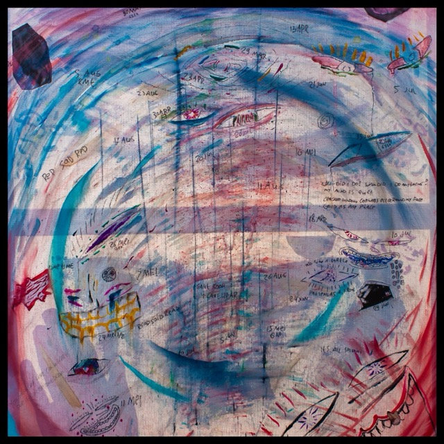
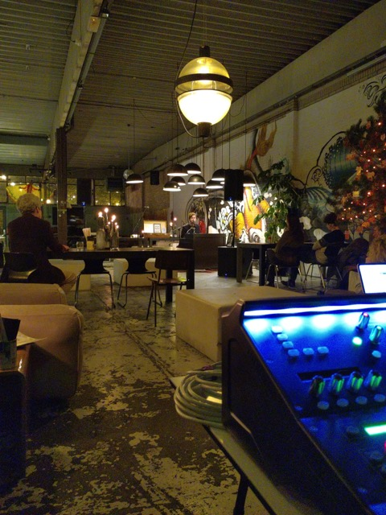

Collectief Pak_ii
Samen met Peer, Midas en Dylan hebben we een instalatie gebouwd met drie elektroakoestische Instrumenten. Klik hier voor een demo
We gaan terug naar de authenticiteit en met de kracht van vertrouwen kunnen we op elkaar bouwen. Ik hoop dat we nog lange tijd blijven samen werken.

Zelfgebouwde Absorbers
In de zomer heb ik samen met Dylan en Midas absorbers gebouwd met tweedehands spullen.
Ik heb er in totaal 6 op mijn kamer gehangen. Ze doen hun werk goed! Het is 10cm glaswol met nog 10cm lucht erachter, mooi ingepakt achter een gordijn.

Geluid voor LE:EN
Ik ben al een lange tijd geluidstechnicus voor LE:EN, eens per maand organiseren ze LE:EN Play, en komen er twee kleine artiesten een set spelen.
De intimiteit van de performances, samen met het enthousiasme van uit het team van LE:EN maakt dit een heel fijne plek voor mij.

Mastering
Sinds dit jaar heb ik mij bezig mogen houden met het masteren van wat hele bijzondere werken. Waaronder Wacko_ van cage.log.
het nog beter maken van een al geweldig project samen met de maker vind ik bijzonder gaaf. Ik blijf dit in de toekomst zeker doen.

UTAsw002
Voor een schoolopdracht ben ik bezig geweest met het ontwikkelen van een output switcher. Dit hele proces heb ik gedocmenteerd op deze Website ik heb er zelf eentje gehouden, en de andere vier ga ik tegen een zacht prijsje verkopen tegen vrienden. Een product zoals dit maken is zeker iets dat ik vaker wil doen.
Kortfilm Muziek
Voor een schoolopdracht voor het eerst muziek gemaakt voor een (kort)film. Dit is een fragment van de volledige film van zes minuten. Het was interessant om zo conceptueel te werk te gaan en mijn eigen visie onder een film te zetten. Het iteratieve proces was gaaf om mee te maken. Documentairemuziek wil ik nog graag een keertje doen.
Doordat ik weinig ervaring heb met filmmuziek, was het leuk om zonder cliches te moeten werken, en echt mijn eigen visie helemaal te kunnen uitwerken

Geluid voor Koffieleute Fesitval
Ik was zo vereerd om gevraagd te worden om geluid te doen bij een van de twee podia van het middagprogramma van Koffieleute festival. Het was een uitdagende klus met drie verschillende bands die dezelfde dag gingen optreden. Gelukkig was er genoeg hulp van de Koffieleute familie, waar ik verrast werd door de warmte van alle bezoekers en het team. Een bijzonder leuk festival waar ik me in de avond ook nog eens kapot heb mogen dansen in de helling.